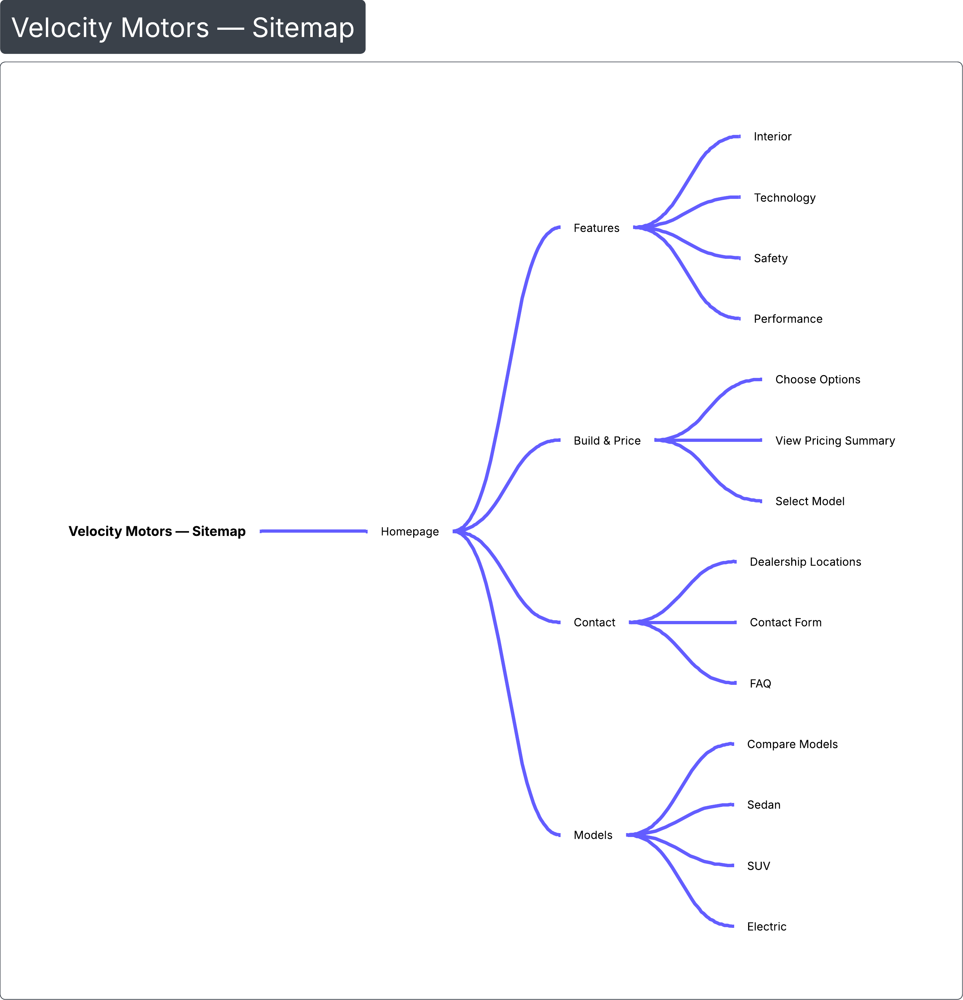
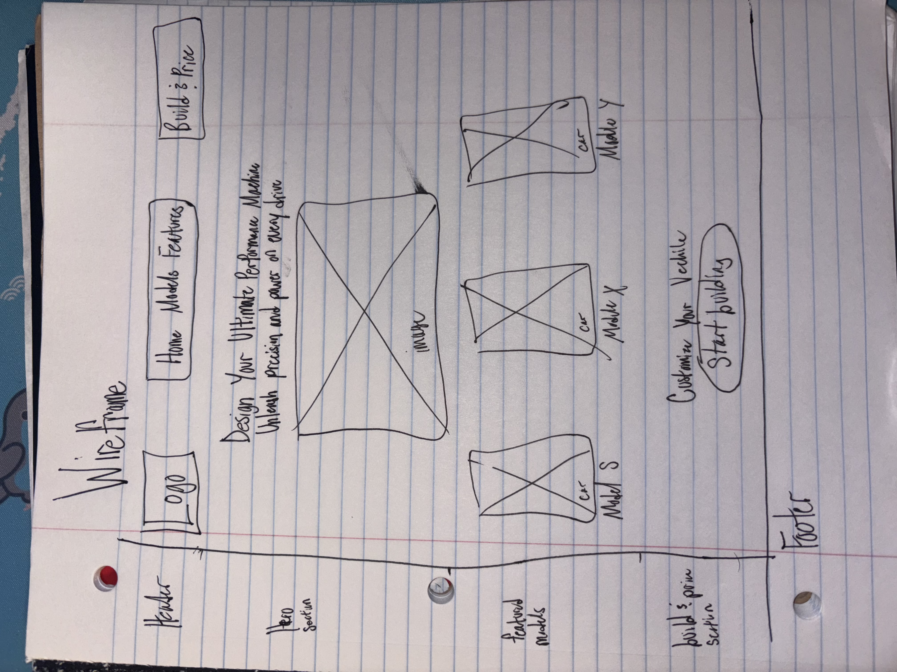

Project Concept
Website Type & Goal
I will design and develop a 3D-inspired car showcase website that presents modern vehicles in a clean, high-end layout. The goal is to create a site that looks professional and feels interactive, while keeping the experience simple and easy to navigate.
Audience
The intended audience is car enthusiasts and buyers who want a quick, visual way to explore cars and compare features. This site is designed to feel like a premium dealership / brand website.
Objectives
- Create a visually engaging homepage that introduces the brand and highlights featured models.
- Organize car information into clear sections (models, features, and contact).
- Include interactive/3D-like visual effects using CSS (and optional JS later) without harming usability.
Planned Features
- Model “cards” with hover animations and depth effects (3D-like CSS).
- Gallery page for multiple models and trims.
- Feature highlights with specs sections and comparisons.
- A “Build & Price” page (can be a mockup) showing selectable options and totals. Not all features have to be functional for the final project.
- Contact page with a basic form layout (even if non-functional).
Inspiration example (opens in new tab): Automotive website design inspiration
Site Map
Content Organization
The website will be organized into five main pages to keep navigation simple and consistent. Each page will share the same header and navigation so users always know where they are.
Planned Pages
- Home
- Models / Gallery
- Features
- Build & Price
- Contact
Site map image:

Wireframe
Homepage Layout Plan
The homepage will include a top navigation bar, a hero section with a featured car, and a grid of highlighted models. The design will use spacing and typography to feel modern, with subtle motion effects for a premium look.
Wireframe image:

Project Resources
Resource 1
I will use MDN's documentation on CSS transforms to create clean “3D-like” hover effects for car cards and images. This will help me build interactive visuals without needing a heavy framework. (Example: translate, rotate, perspective)
Resource link (opens in new tab): MDN: CSS transform